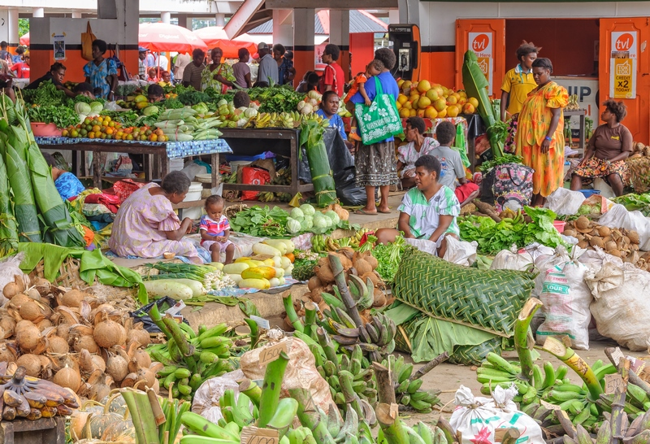
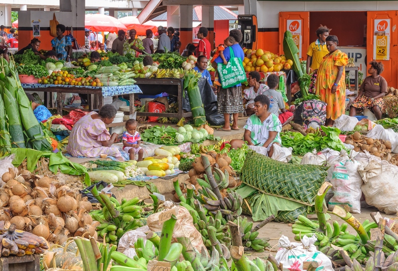

Port Vila, the capital of Vanuatu, is a vibrant city nestled in the South Pacific. With its stunning natural beauty, diverse cultural influences, and welcoming atmosphere, Port Vila offers visitors a captivating blend of tropical paradise and authentic island life. From pristine beaches to bustling markets, the city provides an unforgettable experience in one of the most picturesque settings in the region.
 

National Museum of Vanuatu and Parliament House: National Museum of Vanuatu: Located in the heart of Port Vila, the museum provides a deep dive into the rich cultural heritage and history of Vanuatu. It features traditional artifacts, exhibits on the country's history, and insights into the customs and traditions of the Ni-Vanuatu people. Parliament House: Adjacent to the museum, Parliament House is an architectural highlight and an important symbol of Vanuatu's independence. Tours are available, offering a combined experience with the museum to provide a comprehensive understanding of Vanuatu's cultural heritage and political history.